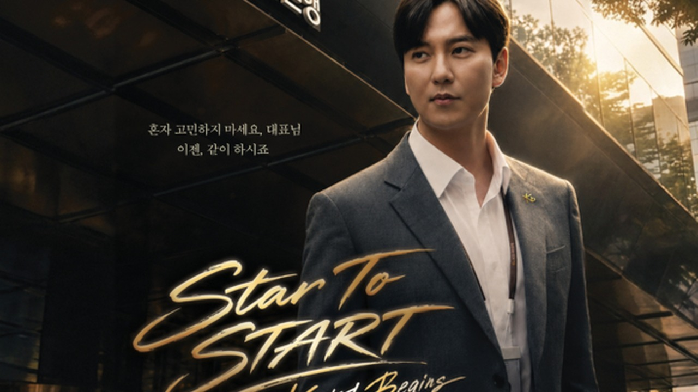
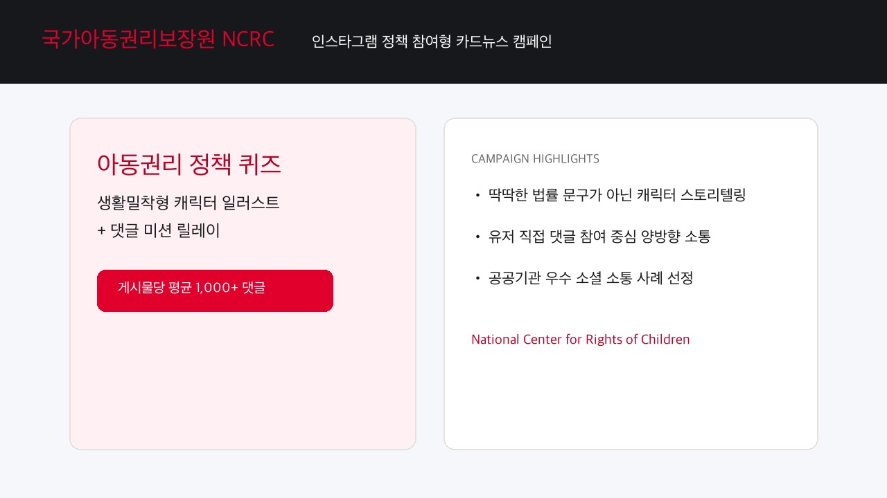
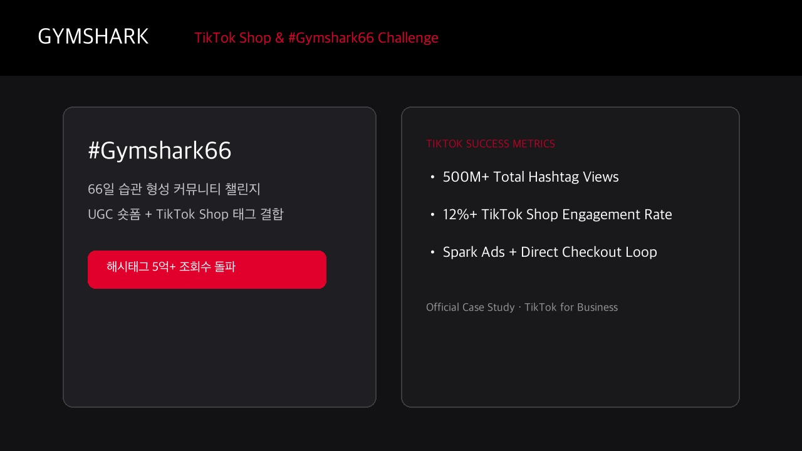
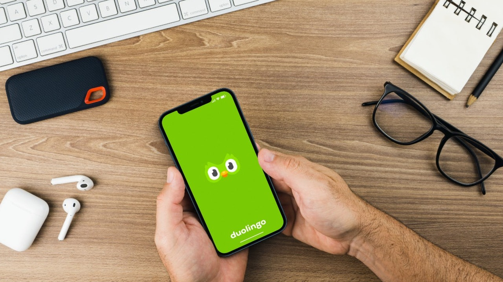
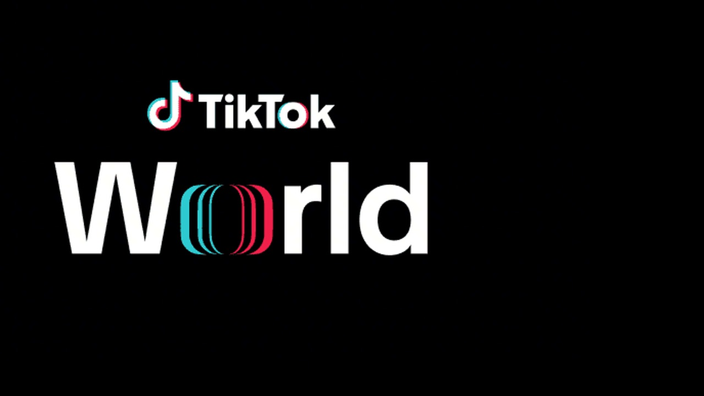
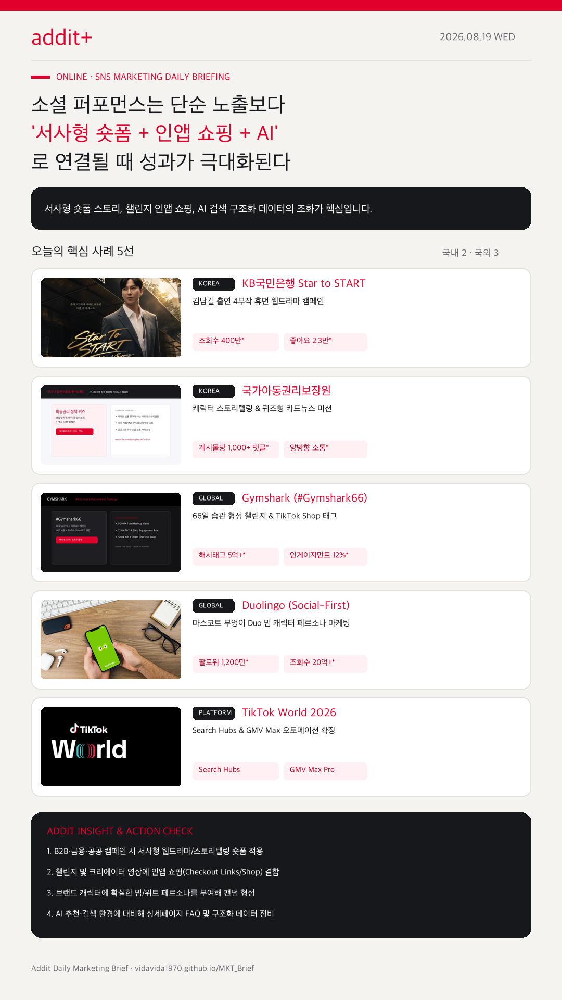

01
8월 말 마케팅은 처서·MAD STARS 등 날짜형 이벤트와 묶인다
8월 23일 처서, 8월 26~28일 MAD STARS 일정에 맞춰 D-7 기획, D-3 세팅, D+1 회고 루틴을 구축합니다.
KB국민은행 4부작 웹드라마, Gymshark 틱톡숍 챌린지, Duolingo 밈 캐릭터, NCRC 퀴즈 카드뉴스, AI 구조화 데이터 전환이 하나의 시스템으로 연결됩니다.
8월 23일 처서, 8월 26~28일 MAD STARS 일정에 맞춰 D-7 기획, D-3 세팅, D+1 회고 루틴을 구축합니다.
KB국민은행(조회수 400만 회, 좋아요 2.3만)처럼 현장 담당자의 페인포인트를 해결하는 4부작 서사형 숏폼이 신뢰를 구축합니다.
Gymshark(#Gymshark66 조회수 5억 회, 인게이지먼트 12%+)처럼 도전형 UGC와 TikTok Shop 구매 링크를 일치시킵니다.
Duolingo(팔로워 1,200만 명, 조회수 20억 회) 및 NCRC(카드뉴스 댓글 1,000+건)처럼 비광고성 오가닉 노출과 댓글 소통을 강화합니다.
네이버 ADVoost Max 및 Google AI 라벨에 맞춰 웹사이트 FAQ, 상품 스펙, 차별점과 AI 투명성 표시 가이드라인을 준비합니다.

KOREA기업금융 RM '김영진 차장'의 중소기업 현장 지원 에피소드로 공개 1개월 만에 누적 조회수 400만 회, 좋아요 2.3만 건, 공유 6,000건을 달성했습니다.

KOREA어려운 아동 권리 정책을 생활밀착형 캐릭터 퀴즈로 재구성해 게시물당 평균 1,000여 건의 댓글을 유도하고 공공 소통 우수 사례로 선정됐습니다.

GLOBAL66일 건강 습관 형성 커뮤니티 챌린지 UGC 영상에 인앱 TikTok Shop 구매 태그를 연동해 해시태그 조회수 5억 회, 인게이지먼트 12%+를 기록했습니다.

GLOBAL인형탈 캐릭터 밈 댄스와 오가닉 댓글 소통으로 TikTok 팔로워 1,200만 명, 오가닉 영상 조회수 20억 회 이상, 앱 카테고리 1위를 유지했습니다.

PLATFORM검색 맥락을 잡는 Search Hubs와 AI 기반 GMV Max Pro로 소셜 발견에서 커머스 성과까지 단축시키는 오토메이션 플랫폼 라인업입니다.
절기 및 시즌 이슈는 단순 공지용 이미지보다 소재 마감 캘린더와 연계해 준비해야 합니다. 8월 23일 처서, 8월 26~28일 MAD STARS 일정에 맞춰 최소 D-7 소재 기획, D-3 세팅, D+1 회고 루틴을 애드아이티 표준 운영안으로 적용할 필요가 있습니다.
나스미디어 마케팅 캘린더 근거 보기 →B2B 및 공공기관 마케팅은 상품 기능 나열보다 스토리텔링 숏폼 및 웹드라마 형태가 퍼널 상단 인지도 확보에 유효합니다. KB국민은행 웹드라마 사례처럼 브랜드 메시지를 해결사 캐릭터와 드라마틱하게 엮어 제작하는 방식을 추천합니다.
KB국민은행 웹드라마 근거 보기 →쇼머스 운영 시 숏폼 영상 내 직접 구매 링크(Checkout Links, TikTok Shop)를 반드시 결합해야 합니다. Gymshark 사례처럼 챌린지 영상 시청과 쇼핑 태그가 일치할 때 전환 단가와 매출 지표를 극대화할 수 있습니다.
Gymshark 성공 사례 근거 보기 →AI 검색·답변 광고 시대에는 키워드 입찰뿐만 아니라 AI가 요약할 랜딩페이지 및 웹사이트 내 FAQ, 핵심 혜택, 상품 스펙 등 구조화 데이터를 먼저 정비해야 합니다. 네이버 ADVoost Max 업데이트 기준에 맞는 체크리스트 수립이 요구됩니다.
네이버 ADVoost Max 공지 근거 보기 →AI 활용 생성형 광고 제작 시 투명성 라벨 및 내부 검수표 완성이 선행되어야 합니다. Google의 'How this ad was made' 표시 확대에 맞춰 AI 생성 영상/이미지의 상표권, 모델 초상권, 라벨 노출 여부를 점검하는 리스크 관리 가이드라인을 도입합니다.
Google AI 투명성 라벨 근거 보기 →AI가 검색·탐색 맥락에 맞춰 실시간 광고 문안과 상품을 최적 배치하므로 랜딩페이지 FAQ 및 구조화 데이터 정비가 시급합니다.
네이버 광고 공지 →Search, YouTube, Discover 지면에 `How this ad was made` 패널이 확대되므로 AI 생성 이미지/영상 내부 검수 라벨을 마련합니다.
Google Blog →
소셜 마케팅은 단순 노출 단가 싸움에서 서사형 스토리와 인앱 쇼핑, AI 검색 구조화로 이동하고 있습니다. 브랜드 페르소나와 구매 직행 동선이 갖춰져야 성과가 축적됩니다.
{kind=link}